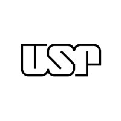

Guilherme Felipetto é Sócio-proprietário na YGG Tecnologia, Pesquisador, Membro da Gestão no grupo BeeData (IME-USP) e aluno do Programa de Pós-Graduação em Ciência da Computação na USP. É especialista em Visão Computacional, Python e C++. Guilherme Felipetto is a Co-owner at YGG Tecnologia, Researcher, Management Member at the BeeData group (IME-USP), and a student in the Computer Science Postgraduate Program at USP. He specializes in Computer Vision, Python, and C++.
Ver Portfólio View PortfolioAtualmente aluno de mestrado em Ciência da Computação no Instituto de Matemática, Estatística e Ciência da Computação da USP e membro da equipe de gestão do grupo BeeData (IME-USP). Currently a Master's student in Computer Science at the Institute of Mathematics, Statistics and Computer Science at USP and a management team member of the BeeData group (IME-USP).
Formado em Ciência de Dados pela Faculdade Donaduzzi (PR), acumula mais de 5 anos de experiência em tecnologia. Sua trajetória começou cedo, estudando ao lado de seu pai, engenheiro de computação, que moldou uma base técnica sólida. Graduated in Data Science from Faculdade Donaduzzi (PR), he has over 5 years of experience in technology. His journey started early, studying alongside his father, a computer engineer, who shaped a solid technical foundation.
Atua como sócio na YGG Tecnologia, desenvolvendo soluções com aprendizado de máquina, com foco em Visão Computacional e Sistemas Web. He acts as a partner at YGG Tecnologia, developing solutions with machine learning, focusing on Computer Vision and Web Systems.
Como membro do BeeData, participa de competições de ciência de dados e aprendizado de máquina, além de projetos práticos. Também ministra aulas técnicas online pelo grupo. As a member of BeeData, participates in data science and machine learning competitions as well as practical projects. Also delivers remote lectures and instructional sessions through the group.
Deu continuidade de projetos de machine learning focados em visão computacional e processamento de linguagem natural, gerenciando-os enquanto utilizava Python e TensorFlow. Também trabalhou no desenvolvimento de sistemas web como desenvolvedor fullstack (C# e Node.js), desenvolvendo extensões de navegador, integração com AWS e modelos de machine learning, além de construir pipelines e realizar o deploy de modelos de IA (MLflow) e Docker. Continued machine learning projects focused on computer vision and natural language processing, managing them while using Python and TensorFlow. Also worked in web system development as a fullstack developer (C# and Node.js), developing browser extensions, AWS integration and machine learning models, as well as building pipelines and deploying AI models (MLflow) and Docker.
Trabalhou desenvolvendo os estágios iniciais de projetos de machine leaning focados em visão computacional, processamento de linguagem natural usando python e Tensorflow, também desenvolveu sistemas Web. Worked on the initial stages of machine learning projects focused on computer vision and natural language processing using Python and TensorFlow, algo developed Web systems.
Atuou como analista de dados usando Python, Visual Basic para Excel, Power BI, PostgreSQL, e o Framework Django para desenvolvimento web. Acted as a data analyst using Python, Visual Basic for Excel, Power BI, PostgreSQL, and the Python Django framework for web development.
Trabalhou com desenvolvimento em XtraReport usando MySQL, Visual Basic. Também contribuiu para o desenvolvimento de aplicação mobile usando Xamarin (C#) Worked in XtraReport development using MySQL and Visual Basic. Also contributed to the development of applications using Xaramin (C#).
Desenvolvimento de modelos Text-To-Speech para clonagem de voz. Projeto premiado como 2º melhor minicurso ministrado no Biopark. Development of Text-To-Speech models for voice cloning. Project awarded as the 2nd best short course taught at Biopark.
Sistema de visão computacional para detecção automática de desvios em carimbos de cartonagens, garantindo integridade do produto. Computer vision system for automatic detection of deviations in carton stamps, ensuring product integrity.
Aplicativo desenvolvido para gerenciamento de aviários com foco no combate à amônia. Application developed for poultry farm management with a focus on combating ammonia.
Demonstração prática de visão computacional aplicada a uma caixa de areia interativa para ensino de topografia. Practical demonstration of computer vision applied to an interactive sandbox for teaching topography.
Publicado no congresso. Aborda o uso de visão computacional para garantir a integridade e segurança de produtos farmacêuticos. Published in the congress. Discusses the use of computer vision to ensure the integrity and safety of pharmaceutical products.
Coautores: Felipetto, G.; Tampelini, L. G.; Honorio, C. Descrição de interfaces gráficas para pessoas cegas com visão computacional. Co-authors: Felipetto, G.; Tampelini, L. G.; Honorio, C. Description of graphical interfaces for blind people using computer vision.

—Universidade de São Paulo (IME-USP)Pós-graduação Stricto Sensu. Foco em Visão Computacional. Stricto Sensu Graduate Program. Focus on Computer Vision.
Cursando as disciplinas: Visão e Processamento de Imagem Digital e Aprendizado de Máquina. Attending the following courses: Digital Image Vision and Processing and Machine Learning
Cursando disciplinas em Probabilidade e Estatística Attending courses in Probability and Statistics
Nota: 9.11
Atividades e grupos: Apresentações de artigos no Latinoware, no Congresso do Biopark, hackathons e projetos de iniciação científica. Participação na Liga Acadêmica.
Bacharelado em Ciência de Dados com foco em análise, modelagem e processamento de informações. Durante o curso, o estudante adquiriu experiência em programação para ciência de dados, análise exploratória de dados, aprendizado supervisionado e não supervisionado, engenharia de dados, processamento digital de imagens, MLOps, visualização da informação, matemática, estatística e probabilidade. Projetos integradores foram desenvolvidos aplicando técnicas de Data Warehouse, Power BI e extração de dados, incluindo imagens digitais, com o objetivo de apoiar a tomada de decisões e a automação de processos.
GPA: 9.11
Activities and groups: Paper presentations at Latinoware, Biopark Congress, hackathons, and undergraduate research projects. Participation in the Academic League.
Bachelor's Degree in Data Science focused on information analysis, modeling, and processing. During the program, the student acquired experience in programming for data science, exploratory data analysis, supervised and unsupervised learning, data engineering, digital image processing, MLOps, information visualization, mathematics, statistics and probability. Integrative projects were developed applying Data Warehouse techniques, Power BI, and data extraction, including digital images, aimed at supporting decision-making and process automation.
São Paulo, SP • (45) 98800-4664
Enviar E-mail Send Email